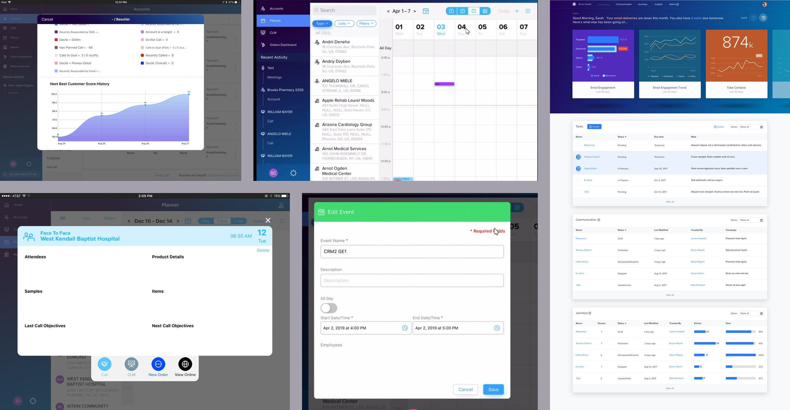
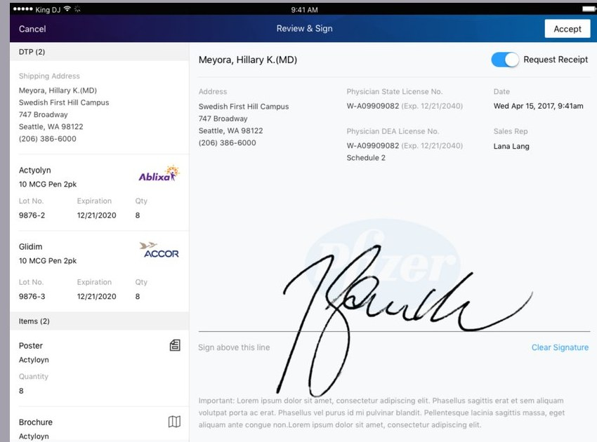
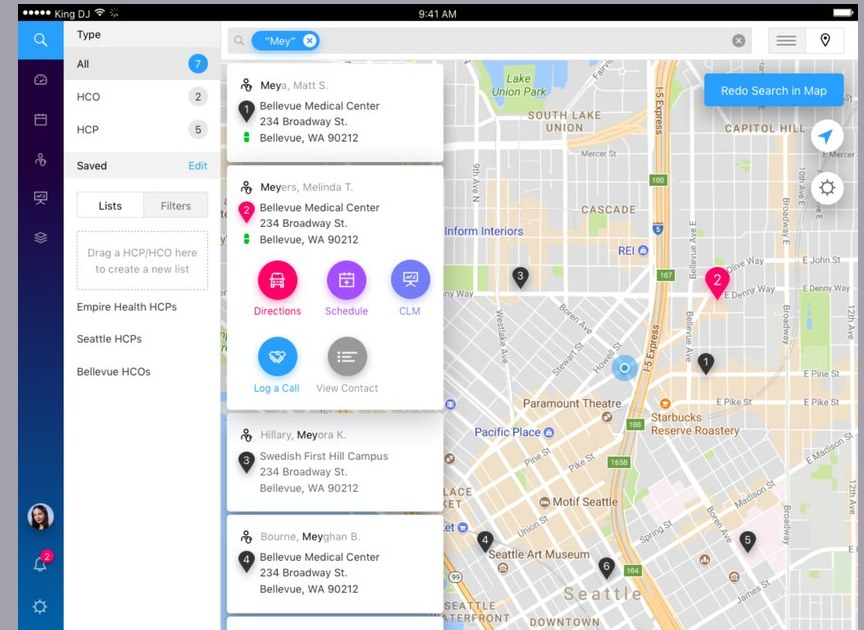

I need to know a sample limit before I hand something over, not after I hit submit in the car.
Case study / IQVIA
Orchestrated Customer Engagement
A pharmaceutical sales rep gets a couple of minutes in a physician's doorway. In that time they have to log a regulated transaction on an iPad, usually with no signal: samples handed over, licenses verified, a signature captured, expenses split, restrictions honored. I led the UI design for the product that had to make all of it fit.
- Role
- UI design lead, team of five
- Client
- IQVIA
- Platform
- iPad, field-first
- Surfaces
- Home, Planner, Call, Account
- Partners
- Engineering, product, visual design
- Shipped
- December 2017, into 130+ countries

Five of roughly 190 designed states. Dashboard, planner, login, territory search, review and sign.
01
The problem
Field software in life sciences tends to get built for the audit rather than for the rep. Every sample handed to a physician counts against a per-call limit and a per-period limit. Some products can't go to some accounts at all. A signature only means something if it carries a state license number, a DEA number, expiration dates, lot numbers and a return address. A shared meal split across three attendees has to be allocated to the cent.
The tools that came before handled all of that by making the rep the compliance engine. They had to know the rules, do the math, and hope the system agreed with them at submission. So calls got logged in the parking lot an hour later from memory, or they didn't get logged at all. That hurts the rep, and it hurts the company more, because the entire commercial model runs on field data being complete.
Orchestrated Customer Engagement was the replacement. My brief covered the part the rep actually touches: a tablet interface quick enough for a doorway conversation and careful enough to survive an audit.
Screen space was never the hard part. Being wrong had consequences.
Three things shaped everything that followed. The environment fights you. Hospital corridors have no signal, and a sync that fails quietly costs somebody a day of work. The user is expert but rushed. Reps know their products better than any interface can teach them, so the job is taking friction out, not explaining things. And the record is legal. Whatever the interface claims about a limit or an eligibility rule has to be true, and the rep needs to see where it came from.
Sales rep
Sales rep
Let me finish a call in whatever order the conversation actually went, and let me start it in the room.
Physician
Show me exactly what I'm signing for, with the lot numbers, before I sign it.
Compliance
Every exception needs a name attached to it and a reason recorded at the time it was made.
Four of the requirements we kept coming back to. The last one is why the product warns instead of blocking.
02
The decisions
Decision 01
Put the rule on the screen, not in a policy document
The sample flow tells the rep what governs the product they're holding: how many are allowed on this call, how many in the current period, how long the period runs, when the last drop happened, how many are left. Products that sit in a restricted class carry a marker in the picker itself, so nobody discovers it at submission.
Of everything we changed, this is the one reps mentioned. The limit stopped being something you carried in your head and became something the screen told you, at the moment you were deciding.
In the file
Sample limit states include a per-product limit picker, a class-level alert with an expandable breakdown of parent and child products, an inline subject to limits marker, an over-limit picker, and a confirmation for exceeding one.
Decision 02
Warn early, warn twice, and let the rep proceed on the record
When a product isn't eligible for an account, a toast fires the second it's added and a popover names the products. A warning that waits for submit arrives after the conversation is over and the sample is already gone.
Where the rules allowed it, I pushed back on hard blocks. Over-sampling got its own path: the product has hit its limit, here's what continuing means, and the choice gets logged. Block a rep who has a good reason and they will find a way around you. Make the exception visible and attributable and it stays inside the record, where compliance can actually see it.
In the file
Product restriction appears as a toast, a popover naming the ineligible products, and a distinct post-tap state. Over-sampling has its own picker, informational state, and confirmation modal.
Decision 03
One call screen with a tab strip, not a wizard
A call carries attendees, employees, discussion details, samples, direct-to-practitioner shipments, leave-behind items, expenses, presentations and follow-up tasks. A stepped flow is the obvious answer and the wrong one. Reps don't finish a call in order. They finish it in whatever order the conversation went, and they usually start during the visit and finish in the car.
So the strip is composed rather than fixed. A remote call, a call with employees in the room, a call that needs a custom entity, a call with follow-up tasks: each one shows a different set of tabs. One screen covered every call type instead of four.
In the file
The call surface carries 56 designed states across the tabs, including remote-call variants with attendee invitation status: accepted, tentative, and bounced with the reason.


Decision 04
Treat the signature screen as the receipt
The signature turns a call into a legal document, so I designed that screen to be read by the person signing it rather than by the database. The physician sees what they're acknowledging, each product with its lot number, expiration and quantity, next to their own license details and the rep's. They sign above a line they can clear and do again.
It is the least interesting screen in the product to look at and the one I would argue hardest for. Everything else in the app is convenience. This one is the evidence.
Decision 05
Take the arithmetic away from the rep
A shared meal has to be allocated across attendees and come to exactly 100%. Rather than leave that as math with an error waiting at the end, the running total sits in the header while the rep works, one tap splits it evenly, and the error state says what is actually wrong instead of refusing to move.
Decision 06
Design the planner around the drive, not the hour
A field day is a route more than it is a calendar. The planner carries month, seven-day, five-day and single-day views, plus a zoom that takes the visible window from twelve hours down to three. You can touch and hold to create, drag to move, drag an edge to change duration, and it handles overlapping events, which happen constantly. A map view shows the route and the drive time between stops. Time off territory is a real event type with repeats and predefined slots, because a calendar nobody can block out is a calendar nobody keeps current.
Only the zoom gesture needed teaching, so that got coachmarks. Nothing else did.
In the file
78 planner states, including four view densities, drag and overlap behavior, map and route views, legends, and the time-off-territory creation and edit flows.
Decision 07
Make the assistant explainable and dismissible
The product shipped with a recommendation layer: accounts worth visiting, messages worth delivering, samples worth dropping. I built it as a column the rep can collapse, and gave every suggestion a see why plus a single tap to pull it into the call.
Reps ignore recommendations they can't interrogate, and they resent ones they can't dismiss. Either way they have stopped reading by the second week. Showing the reasoning and letting people close the panel is what gave the feature a chance of being used at all.
Decision 08
Design the offline and empty states first
Hospitals eat signal, so sync got treated as a real part of the interface with its own vocabulary: last synced, syncing, complete, failed with a reason, tap to retry. Every list has an empty state that tells the rep what to do instead of showing them nothing, and unsubmitted calls stay on the home screen until they are cleared.
These are the screens that get cut from a demo. They are also the ones that decide whether anybody is still using the product in March.
03
Leading the work
I led a team of five UX/UI designers. We split the product by surface and I reviewed the work as it came through, though at this scale the job has less to do with critiquing individual screens than with keeping five people's instincts pointed the same direction.
The harder half happened outside the design team. I worked directly with engineering and the product managers through implementation, because on a product like this a requirement that arrives correct and ships slightly wrong becomes a compliance bug rather than a visual one. Staying inside the build, instead of handing off ahead of it, is what kept the intent intact.
I also worked alongside the visual design team so the product read as the same brand as everything around it: the marketing site, the collateral, the demos it turned up in. A field tool that looks like it came from another company undercuts whatever the rest of the business is saying.
Consistency at this scale is a coordination problem before it's a design problem.
04
The system underneath
None of this scales as one-off screens. The whole product came out of a symbol library: navigation, cards, pickers, popovers, toasts, modals, form rows, charts, keyboards. Change a pattern and it moved through every state using it. We organized master files by surface, versioned them by date, and handed them to engineering as living documents rather than as a delivery.
That mattered more than the component count. A new call type or a new compliance rule could be designed as a variation instead of a new screen, and the states nobody puts in a demo, the errors and the partial data and the sync failures, stayed current without a redesign every time.
56Call states
78Planner states
49Account states
4Core surfaces
05
How it landed
OCE launched on 12 December 2017. Within twelve months more than thirty life sciences companies had picked it up, Novo Nordisk and Roche among them, and it was running in 115 countries. By 2024 it served close to 400 enterprise customers across more than 130. The field app went out with all of it.
2017Launched
30+Companies, year one
~400Enterprise customers
130+Countries
That reach is the real argument for the decisions above. Sample limits, product eligibility and signature requirements don't match across Japan, Germany and the United States. Had we drawn the compliance surface as fixed screens, every market would have meant a new one. Built as components whose rules are content, a market with a different limit structure gets a different picker and the same product.
In April 2024 IQVIA licensed the OCE CRM software to Salesforce, which folded it into Salesforce Life Sciences Cloud, and committed to supporting existing OCE customers through 2029. The patterns outlasted the roadmap they were built for, which is about as much as a product designer gets to ask for.
One thing I took with me. The hard part of regulated software was never fitting the rules onto a screen. It was deciding which rules a person should have to carry in their head, and the answer was almost always none of them.
Figures from IQVIA's January 2019 adoption release and its April 2024 Salesforce partnership announcement. Product screens come from the demo builds, which use fictional accounts, physicians and products.
Work with me